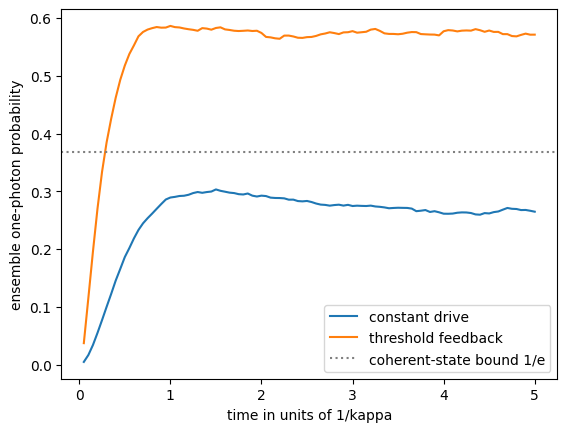

We study one driven lossy cavity mode and a noisy photon-number meter. The initial state is vacuum. Time is measured in units of \(1/\kappa\), with the photon loss rate \(\kappa=1\), and drive strengths in units of \(\kappa\). The reward is the one-photon probability, averaged over 100 decisions spaced by \(0.05/\kappa\). The controller receives only recent readings and chooses a drive; the simulator computes the reward from its conditional state. This notebook trains no agent. We repeat the constant-drive and threshold-rule selection of Lab 053, with the same model, on independent validation and test trajectories.
The drive Hamiltonian is \(i\varepsilon(a^\dagger-a)\). A physics substep applies its unitary, then samples the loss Kraus operators \(K_0=\sqrt{I-\kappa\,dt\,n}\) and \(K_1=\sqrt{\kappa\,dt}\,a\). The latter construction is first order in time and requires \(\kappa\,dt\,(N_{\rm cut}-1)\le1\). At each decision the meter samples \(x=n+\sigma\xi\) and updates amplitudes by \(\exp[-(x-n)^2/(4\sigma^2)]\), followed by normalisation.
We keep the decision interval and meter noise per reading fixed while refining physics substeps. Changing the noise per reading changes both available information and measurement backaction. It is a change of physical measurement model.
Run in order with NumPy, SciPy and Matplotlib.
Code
import json,timefrom pathlib import Pathimport numpy as npimport matplotlib.pyplot as pltfrom scipy.linalg import expmOUT=Path('classroom_results');OUT.mkdir(exist_ok=True)started=time.perf_counter()def simulate(seed,drive=.75,window=4,threshold=.5,feedback=False,ncut=10,dt_s=.01,sigma=1.,batch=256): rng=np.random.default_rng(seed);n=np.arange(ncut);a=np.diag(np.sqrt(n[1:]),1) dt=.05;nsub=round(dt/dt_s)assert np.isclose(nsub*dt_s,dt) and dt_s*(ncut-1)<=1 amplitudes=np.zeros((batch,ncut));amplitudes[:,0]=1 history=np.zeros((batch,window));U=expm(drive*dt_s*(a.T-a)) k0=np.sqrt(1-dt_s*n);results=[];edge=0.for t inrange(100): on=history.mean(1)<threshold if feedback else np.ones(batch,bool)for _ inrange(nsub): driven=amplitudes@U.T amplitudes=np.where(on[:,None],driven,amplitudes) jump=np.sqrt(dt_s)*(amplitudes@a.T) probability=(jump**2).sum(1)assert np.all(probability>=0) and np.all(probability<=1+1e-10) use_jump=rng.random(batch)<probability amplitudes=np.where(use_jump[:,None],jump,amplitudes*k0) amplitudes/=np.linalg.norm(amplitudes,axis=1,keepdims=True) probs=amplitudes**2;u=rng.random(batch) drawn=(u[:,None]>np.cumsum(probs,axis=1)).sum(1)assert np.all(drawn<ncut) reading=drawn+sigma*rng.normal(size=batch) amplitudes*=np.exp(-(reading[:,None]-n)**2/(4*sigma**2)) amplitudes/=np.linalg.norm(amplitudes,axis=1,keepdims=True) history=np.concatenate([history[:,1:],reading[:,None]],1) results.append(amplitudes[:,1]**2) edge=max(edge,float(np.max(np.sum(amplitudes[:,-2:]**2,axis=1)))) rewards=np.array(results).T;episode=rewards.mean(1)return {'mean':float(episode.mean()),'SE':float(episode.std(ddof=1)/np.sqrt(batch)),'max_edge_population':edge,'time_curve':rewards.mean(0).tolist()}print('Quantum trajectory model ready')
Quantum trajectory model ready
Validation and held-out evaluation
A constant drive applies the same \(\varepsilon\) at every decision. A threshold rule applies the drive \(\varepsilon\) while the mean of the last \(m\) readings is below the threshold \(x_{\rm th}\) and otherwise turns it off. We scan the constant drives \(\varepsilon\in\{0.5,0.75,1,1.35,2\}\) and the rules with the two strongest drives \(2\kappa\) and \(4\kappa\), the windows \(m\in\{1,2,4,6,10,15,20\}\) and the thresholds \(x_{\rm th}\in\{0.3,0.4,\dots,0.8\}\). The windows 15 and 20 extend the grid of Lab 053, so that an optimum at its edge would be visible. Each setting is scored on 2000 validation trajectories with a 32-level cutoff for constant drives and 12 levels for rules, and the tables print the mean, its standard error and the largest population of the two highest levels. The selected settings are then evaluated on 10,000 fresh test trajectories, with 32 levels for the constant drive and 16 for the rule.
Code
DRIVES=[.5,.75,1.,1.35,2.]constants={e:simulate(600,drive=e,ncut=32,batch=2000) for e in DRIVES}print('Constant drive validation (2000 trajectories, 32 levels)')for e,r in constants.items():print(f" eps={e:4.2f} mean {r['mean']:.4f} SE {r['SE']:.4f} max edge {r['max_edge_population']:.1e}")eps=max(constants,key=lambda e:constants[e]['mean'])WINDOWS=[1,2,4,6,10,15,20];THRESHOLDS=[.3,.4,.5,.6,.7,.8]rules={(d,m,x):simulate(601,drive=d,window=m,threshold=x,feedback=True,ncut=12,batch=2000)for d in [2.,4.] for m in WINDOWS for x in THRESHOLDS}for d in [2.,4.]:print(f'Threshold rule validation, drive {d:g}: rows window m, columns threshold',THRESHOLDS)for m in WINDOWS:print(f' m={m:2d} ',' '.join(f"{rules[d,m,x]['mean']:.3f}"for x in THRESHOLDS))print('largest edge population over all rules',f"{max(r['max_edge_population'] for r in rules.values()):.1e}",'; validation SE about',round(float(np.mean([r['SE'] for r in rules.values()])),4))drive,w,th=max(rules,key=lambda k:rules[k]['mean'])const=simulate(1600,drive=eps,ncut=32,batch=10000)rule=simulate(1601,drive=drive,window=w,threshold=th,feedback=True,ncut=16,batch=10000)print('Best tested constant drive',eps,'test mean and SE',round(const['mean'],4),round(const['SE'],4))print('Best tested rule, drive, window and threshold',drive,w,th,'test mean and SE',round(rule['mean'],4),round(rule['SE'],4))print('Lab 053 for comparison: constant 1.35 gives 0.258 (exact); rule m=4, x_th=0.4 at drive 4 gives 0.549-0.550')plt.plot(np.arange(1,101)*.05,const['time_curve'],label='constant drive')plt.plot(np.arange(1,101)*.05,rule['time_curve'],label='threshold feedback')plt.axhline(np.exp(-1),color='gray',ls=':',label='coherent-state bound 1/e')plt.xlabel('time in units of 1/kappa');plt.ylabel('ensemble one-photon probability');plt.legend();plt.show()
Constant drive validation (2000 trajectories, 32 levels)
eps=0.50 mean 0.0976 SE 0.0027 max edge 3.0e-231
eps=0.75 mean 0.1681 SE 0.0029 max edge 1.3e-205
eps=1.00 mean 0.2261 SE 0.0027 max edge 4.6e-172
eps=1.35 mean 0.2575 SE 0.0022 max edge 9.1e-128
eps=2.00 mean 0.2205 SE 0.0019 max edge 3.0e-49
Threshold rule validation, drive 2: rows window m, columns threshold [0.3, 0.4, 0.5, 0.6, 0.7, 0.8]
m= 1 0.320 0.338 0.356 0.371 0.380 0.385
m= 2 0.342 0.371 0.392 0.407 0.417 0.424
m= 4 0.376 0.410 0.434 0.448 0.451 0.451
m= 6 0.393 0.428 0.450 0.461 0.461 0.453
m=10 0.411 0.438 0.453 0.458 0.449 0.434
m=15 0.405 0.423 0.429 0.425 0.421 0.408
m=20 0.390 0.398 0.401 0.399 0.391 0.381
Threshold rule validation, drive 4: rows window m, columns threshold [0.3, 0.4, 0.5, 0.6, 0.7, 0.8]
m= 1 0.475 0.469 0.457 0.440 0.422 0.402
m= 2 0.526 0.524 0.512 0.494 0.470 0.443
m= 4 0.551 0.552 0.537 0.518 0.489 0.455
m= 6 0.543 0.544 0.529 0.507 0.477 0.442
m=10 0.495 0.489 0.477 0.455 0.433 0.406
m=15 0.443 0.435 0.422 0.406 0.394 0.379
m=20 0.405 0.393 0.389 0.375 0.361 0.350
largest edge population over all rules 2.2e-03 ; validation SE about 0.0029
Best tested constant drive 1.35 test mean and SE 0.2568 0.001
Best tested rule, drive, window and threshold 4.0 4 0.4 test mean and SE 0.5495 0.0011
Lab 053 for comparison: constant 1.35 gives 0.258 (exact); rule m=4, x_th=0.4 at drive 4 gives 0.549-0.550

Timestep, cutoff and observation sensitivity
The following checks use the selected threshold rule, frozen after validation, and 10,000 trajectories per setting. The timestep scan refines the physics substep \(dt\) at fixed meter timing. Its settings use independent seeds, so their differences can be compared with the printed standard errors.
The cutoff scans reuse one seed for all cutoffs. These are paired comparisons with common random numbers. While the highest levels are almost empty the trajectories nearly coincide, and the printed paired difference to the largest cutoff measures the truncation error directly. The standard error of a single mean is the wrong yardstick for that difference. The edge population shows how close each cutoff comes to the truncation boundary.
The window and noise scans use the fixed rule with independent seeds. Comparisons with the neural agent belong to Lab 053.
Code
checks={};B=10000for k,dt_s inenumerate([.01,.005,.0025,.00125]): checks[f'dt={dt_s}']=simulate(1700+k,drive=drive,window=w,threshold=th,feedback=True,ncut=12,dt_s=dt_s,batch=B)paired={}for ncut in [8,10,12,16]: checks[f'rule cutoff={ncut}']=simulate(1800,drive=drive,window=w,threshold=th,feedback=True,ncut=ncut,batch=B)for ncut in [16,24,32]: checks[f'constant cutoff={ncut}']=simulate(1850,drive=eps,ncut=ncut,batch=B)for ncut in [8,10,12]:paired[f'rule cutoff {ncut} minus 16']=checks[f'rule cutoff={ncut}']['mean']-checks['rule cutoff=16']['mean']for ncut in [16,24]:paired[f'constant cutoff {ncut} minus 32']=checks[f'constant cutoff={ncut}']['mean']-checks['constant cutoff=32']['mean']for k,sigma inenumerate([.5,1.,2.]): checks[f'noise={sigma}']=simulate(1900+k,drive=drive,window=w,threshold=th,feedback=True,ncut=12,sigma=sigma,batch=B)for k,window inenumerate([1,4,10,20]): checks[f'window={window}']=simulate(2000+k,drive=drive,window=window,threshold=th,feedback=True,ncut=12,batch=B)for label,result in checks.items():print(f"{label:20s} mean {result['mean']:.4f} SE {result['SE']:.4f} max edge population {result['max_edge_population']:.2e}")for label,diff in paired.items():print(f'paired difference, {label}: {diff:.1e}')summary={'experiment':'constant and threshold cavity diagnostics, no trained agent','constant_validation':{str(e):r['mean'] for e,r in constants.items()},'rule_validation':{f'{d},{m},{x}':r['mean'] for (d,m,x),r in rules.items()},'constant_drive':eps,'rule_drive':drive,'rule_window':w,'rule_threshold':th,'constant_test':const,'rule_test':rule,'checks':checks,'paired_cutoff_differences':paired,'runtime_seconds':time.perf_counter()-started}(OUT/'lab060_results.json').write_text(json.dumps(summary,indent=2))print('Runtime seconds',round(summary['runtime_seconds'],1))
dt=0.01 mean 0.5500 SE 0.0011 max edge population 4.11e-11
dt=0.005 mean 0.5482 SE 0.0011 max edge population 1.94e-13
dt=0.0025 mean 0.5478 SE 0.0011 max edge population 1.84e-13
dt=0.00125 mean 0.5508 SE 0.0011 max edge population 3.66e-13
rule cutoff=8 mean 0.5487 SE 0.0011 max edge population 9.34e-02
rule cutoff=10 mean 0.5487 SE 0.0011 max edge population 8.25e-05
rule cutoff=12 mean 0.5487 SE 0.0011 max edge population 5.28e-10
rule cutoff=16 mean 0.5487 SE 0.0011 max edge population 1.75e-26
constant cutoff=16 mean 0.2575 SE 0.0010 max edge population 9.47e-03
constant cutoff=24 mean 0.2575 SE 0.0010 max edge population 2.32e-39
constant cutoff=32 mean 0.2575 SE 0.0010 max edge population 2.41e-109
noise=0.5 mean 0.5543 SE 0.0016 max edge population 1.48e-36
noise=1.0 mean 0.5501 SE 0.0011 max edge population 1.22e-12
noise=2.0 mean 0.4236 SE 0.0008 max edge population 2.43e-05
window=1 mean 0.4694 SE 0.0009 max edge population 3.08e-14
window=4 mean 0.5467 SE 0.0011 max edge population 1.11e-10
window=10 mean 0.4945 SE 0.0014 max edge population 1.21e-08
window=20 mean 0.3907 SE 0.0016 max edge population 7.81e-07
paired difference, rule cutoff 8 minus 16: -3.5e-12
paired difference, rule cutoff 10 minus 16: -2.2e-16
paired difference, rule cutoff 12 minus 16: 0.0e+00
paired difference, constant cutoff 16 minus 32: 4.4e-14
paired difference, constant cutoff 24 minus 32: 0.0e+00
Runtime seconds 81.7
Interpreting the numerical checks
The validation reproduces the selection of Lab 053 with independent trajectories. The best tested constant drive is \(\varepsilon=1.35\kappa\). Its test mean \(0.2568\pm0.0010\) agrees with the exact density-matrix value 0.258 of Lab 053 within about one standard error. With the drive \(4\kappa\) the best rule uses \(m=4\) and \(x_{\rm th}=0.4\), as in Lab 053, and reaches \(0.5495\pm0.0011\) on the test trajectories, inside the range 0.549 to 0.550 of that study, where the trained agents reach 0.557 to 0.566. The weaker drive \(2\kappa\) gives at most 0.461 on validation. The selected window lies inside the extended grid. Windows of 15 and 20 readings give lower means, consistent with a long average responding late to a photon loss.
The four timestep estimates come from independent seeds and differ by at most 0.003, about two combined standard errors, with no systematic trend as \(dt\) decreases. The discretisation error at \(dt=0.01\) is therefore below the resolution of about 0.003 of this scan. In the paired cutoff scans the rule means agree to \(4\times10^{-12}\) from 8 levels on, although at 8 levels one trajectory places up to 9% of its population on the two highest levels. The constant-drive means agree to \(5\times10^{-14}\) from 16 levels on. The noise scan keeps the window and threshold selected at \(\sigma=1\). A less noisy meter, \(\sigma=0.5\), raises the mean slightly to 0.554, and \(\sigma=2\) lowers it to 0.424. These scans concern this rule and these settings and establish no general convergence guarantee for every controller or drive.
Student calculations
Check Kraus completeness and identify the timestep restriction. Derive the Gaussian meter update from its likelihood. Explain why changing noise changes both information and backaction. Compare timestep differences with sampling uncertainty. Explain why constant drive with this active meter is a different physical model from an unmeasured coherently driven cavity, for which the coherent-state one-photon bound is \(e^{-1}\). Distinguish selecting a threshold on validation data from evaluating it on held-out data.